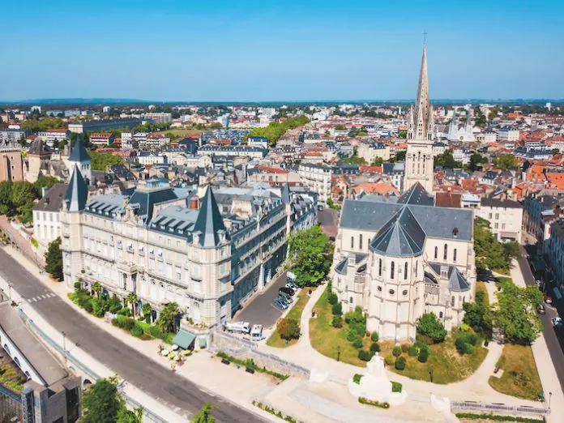

PhD Candidate in Linguistics — Maynooth University
I am a Hungarian PhD candidate in Linguistics at Maynooth University, Ireland. Originally from Budapest and now based in Ireland, my academic work is shaped by an interdisciplinary background in Anthropology and Linguistic Anthropology.
My research interests lie at the intersection of minority language communities, linguistic landscape, vocabulary change, language revitalization, language policy, and linguistic human rights. I am particularly interested in dialectal variation and lexical transformation in minoritized language contexts.
An Ethnography of Gascon Béarnais Occitan: Language Ideology, Cultural Reclamation, and Whistled Practices
My doctoral research is an ethnographic study of Gascon Béarnais Occitan conducted in Pau and the village of Aas in southern France. The project examines how activists, teachers, institutional actors, and community members engage with both the spoken dialect and its distinctive whistled variety.
The research analyses language ideologies, cultural recovery efforts, and the challenges of intergenerational transmission in contemporary revitalization contexts. It explores how institutional programmes and community-led initiatives interact in sustaining Gascon Béarnais and its whistled linguistic practices today.
Fieldwork is scheduled to take place in Pau and the village of Aas in southern France. Preliminary visits have informed the development of the ethnographic framework, research design, and community engagement strategy.
You can contact me at hajna.detremcgrath.2019@mumail.ie